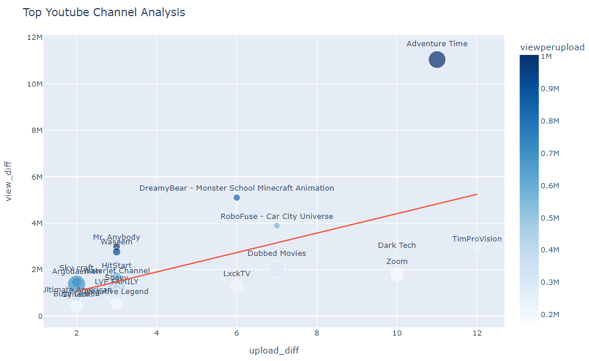
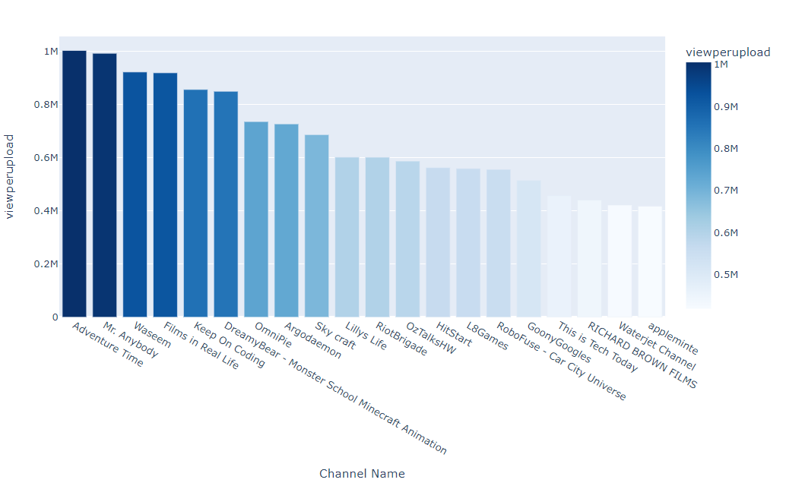
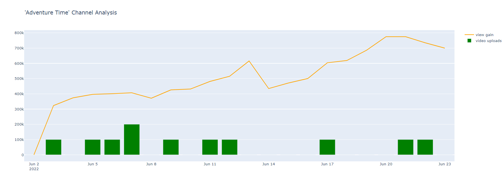
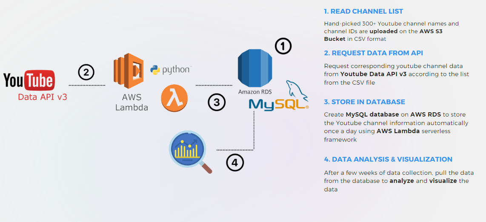

Youtube Channel Monitoring System
🎞️ About The Project
YouTube analytics are essential for businesses partnering with channels to promote their products. However, without access to a specific channel's analytics information, assessing performance becomes challenging.
The YouTube Channel Performance Monitoring system can identify channels with higher performance in their views counts, engagement rate and upload frequency.
This Youtube channel monitoring system runs on the AWS Lambda serverless framework.
Once a day, the monitor logs youtube channel statistics such as subscriber count, video count, view count, etc.
Built with
- Python 3.8
- YouTube API V3
- AWS Lambda
- AWS RDS
- MySQL Server
Project Repository
📈 Result
We are able to identify high-performing channels among listed channels. 
Also, we can depict the viewership trend of high-performing channels.
💻 System Structure & process
- Input the list of Youtube channel names and channel IDs in the database (AWS RDS-MySQL)
- Request corresponding youtube channel statistics from Youtube Data API v3
- Store the Youtube channel information in the database automatically, once a day, using AWS Lambda serverless framework
- Data manipulation and visualization @Jupiter Notebook
Prerequisites
pip install google-api-python-client pip install pandas pip install pymysql pip install sqlalchemy pip install boto3
api_key = 'Your API Key' hostname="Host Address" dbname="Database" uname="User Name" pwd="Your Password"
📊 Data
1. Input Data
| Channel Name | Channel ID |
|---|---|
| Example Channel | UCK9M3uZMNjbqCI3O80-eF1k |
| ... | ... |
2. Output Data
| channel_name | published_date | subscribers | views | total_videos | playlist_id | retrieved_date |
|---|---|---|---|---|---|---|
| Example Channel | 2015-12-27T21:31:03Z | 1690000 | 680087428 | 185 | UUJCx8aQrdx_ueXPmxTD2odQ | 2022/09/15 |
| ... | ... | ... | ... | ... | ... | ... |
published_date: The date channel was published
subscribers: Total subscriber count of the channel (Count in 1000)
views: Total view count of public viddeos in the channel (Decreases if video is unlisted)
total_video: Total number of public videos in the channel
playlist_id: Channel's playlist ID for further analysis
retrieved_date: The the data was retrieved
3. Data Manipulation
| channel_name | sub_diff | view_diff | upload_diff | viewperupload | sub_gain | veiw_gain | videoloads |
|---|---|---|---|---|---|---|---|
| Example Channel | 2000 | 310902 | 4 | 777025.5 | 1000 | 42407 | 1 |
| ... | ... | ... | ... | ... | ... | ... | ... |
sub_diff: How much subscriber has increased overtime (Count in 1000)
view_diff: How much view has increased overtime
upload_diff: How many video was uploaded (or unlisted) overtime
viewperupload: Mean of view count affected per uploads, overtime: (view_diff/upload_diff)
sub_gain: Subscriber gain to the day before
view_gain: View gain to the day before
4. Evaluation
What we want to know: We want to know how much one video worth.How to evaluate: How much view has increased overtime
Evaluation index: How many video was uploaded (or unlisted) overtime
Parameter Estimator: Mean of view count affected per uploads, overtime: (view_diff/upload_diff)